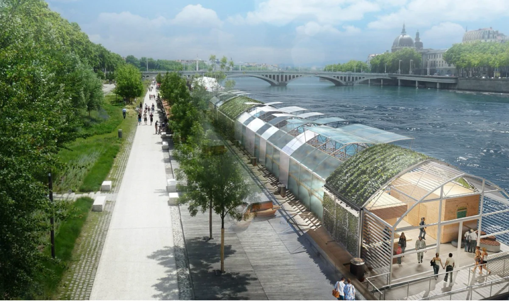

Truite etBasilic
Une barge fluviale devenue serre flottante. Lyon, En cours.
DéfilerFiche technique
- Lieu
- Lyon
- Maître d’ouvrage
- Truite et Basilic
- Maître d’œuvre
- Agence Rheinert – Oxygen Architecture
- Calendrier
- En cours
- Catégorie
- Agriculture urbaine
Comment utiliser la ville de manière innovante pour la production alimentaire ? Le projet « Truite et Basilic » propose de transformer une barge fluviale en une serre flottante, en utilisant la technique de l’aquaponie, une combinaison symbiotique de culture de plantes et de pisciculture.
Les rives des fleuves lyonnais, notamment le Rhône, accueillent depuis des siècles des marchés quotidiens et hebdomadaires. Les denrées produites localement peuvent y être apportées directement à l’acheteur : trajets courts et agriculture urbaine innovante sont ici au premier plan.
Ce bateau reconverti dispose d’une façade extérieure végétalisée et d’un espace d’accueil pédagogique qui sert à la fois de point de vente au public et d’espace d’information sur l’agriculture urbaine.
Les images
4 images
Cliquez sur une image pour l’agrandir.